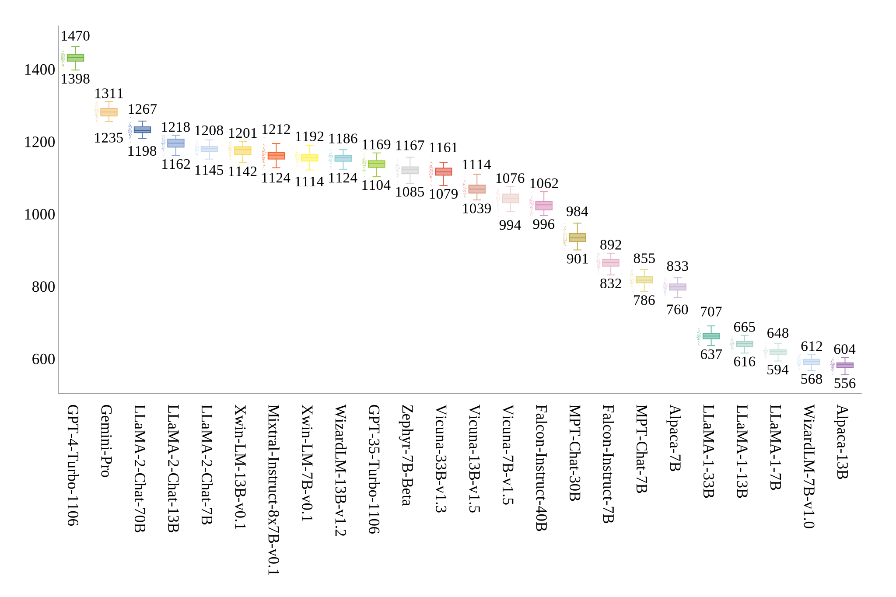

Rethinking Generative Large Language Model Evaluation
for Semantic Comprehension
- Fangyun Wei*
- Lin Luo*
- Xi Chen*
- Microsoft Research Asia
- *: Equal contribution
Abstract
Despite their sophisticated capabilities, large language models (LLMs)
encounter a major hurdle in effective assessment. This paper first revisits the prevalent evaluation
method—multiple choice question answering (MCQA), which allows for straightforward accuracy measurement.
Through a comprehensive evaluation of 24 models across 11 benchmarks, we highlight several potential
drawbacks of MCQA, for instance, the inconsistency between the MCQA evaluation and the generation of
open-ended responses in practical scenarios. In response, we introduce an RWQ-Elo rating system,
engaging 24 LLMs such as GPT-4, GPT-3.5, Google-Gemini-Pro and LLaMA-1/-2, in a two-player competitive
format, with GPT-4 serving as the judge. Each LLM receives an Elo rating thereafter. This system is
designed to mirror real-world usage, and for this purpose, we have compiled a new benchmark called
``Real-world questions'' (RWQ), comprising 20,772 authentic user inquiries. Additionally, we thoroughly
analyze the characteristics of our system and compare it with prior leaderboards like AlpacaEval and
MT-Bench. Our analysis reveals the stability of our RWQ-Elo system, the feasibility of registering new
models, and its potential to reshape LLM leaderboards.
Result Overview
| Model | Size | Choices | Choices (Circular) | Vocab | Vocab (Circular) | Alignment | Normalized Alignment | PPL |
|---|---|---|---|---|---|---|---|---|
| MPT | 7B | 36.0 | 2.2 | 35.2 | 2.0 | 52.3 | 54.3 | 54.2 |
| 30B | 53.0 | 26.4 | 49.2 | 23.0 | 54.8 | 57.1 | 56.8 | |
| MPT-Chat | 30B | 61.5 | 37.9 | 60.8 | 37.0 | 56.7 | 58.9 | 58.3 |
| Falcon | 7B | 31.7 | 3.6 | 30.2 | 2.9 | 52.3 | 54.2 | 54.7 |
| 40B | 62.3 | 36.6 | 62.0 | 36.4 | 57.8 | 59.4 | 59.8 | |
| LLaMA-1 | 7B | 40.4 | 8.0 | 38.7 | 7.2 | 52.8 | 54.7 | 53.6 |
| 13B | 52.6 | 20.1 | 50.2 | 18.3 | 54.6 | 56.1 | 55.3 | |
| 30B | 65.6 | 45.3 | 65.4 | 45.0 | 57.0 | 58.7 | 57.8 | |
| 65B | 67.5 | 45.2 | 66.1 | 43.9 | 58.3 | 60.1 | 59.4 | |
| LLaMA-2 | 7B | 47.5 | 17.4 | 42.7 | 14.1 | 53.3 | 55.1 | 54.4 |
| 13B | 60.8 | 31.1 | 58.6 | 29.7 | 55.5 | 57.0 | 56.4 | |
| 70B | 75.2 | 58.4 | 74.8 | 57.9 | 59.0 | 60.4 | 59.8 | |
| LLaMA-2-Chat | 7B | 57.7 | 28.8 | 55.8 | 28.3 | 54.1 | 55.8 | 54.5 |
| 13B | 65.4 | 40.9 | 65.3 | 40.8 | 56.0 | 58.6 | 57.0 | |
| 70B | 74.3 | 56.8 | 74.2 | 56.6 | 58.9 | 60.7 | 59.5 | |
| WizardLM | 13B | 67.6 | 47.1 | 67.6 | 47.1 | 56.6 | 58.1 | 57.4 |
| 70B | 76.7 | 61.7 | 76.6 | 61.6 | 59.2 | 60.3 | 59.8 | |
| Xwin-LM | 7B | 55.0 | 25.2 | 54.8 | 25.0 | 55.0 | 55.9 | 55.3 |
| 13B | 64.0 | 34.9 | 63.9 | 34.7 | 57.3 | 58.6 | 58.1 | |
| Alpaca | 7B | 52.7 | 24.4 | 52.5 | 24.1 | 54.4 | 56.5 | 55.1 |
| 13B | 54.0 | 30.3 | 53.6 | 30.0 | 55.5 | 56.8 | 55.9 | |
| Vicuna | 7B | 62.6 | 41.1 | 62.5 | 41.0 | 53.8 | 54.7 | 54.3 |
| 13B | 68.8 | 50.1 | 68.7 | 50.1 | 56.3 | 57.6 | 56.6 | |
| 33B | 69.6 | 50.2 | 64.3 | 45.0 | 56.4 | 57.9 | 57.4 |

Citation
@article{wei2024rethinking,
title={Rethinking Generative Large Language Model Evaluation for Semantic Comprehension},
author={Fangyun Wei and Lin Luo and Xi Chen},
journal={arXiv preprint arXiv:2402.00001},
year={2024}
}